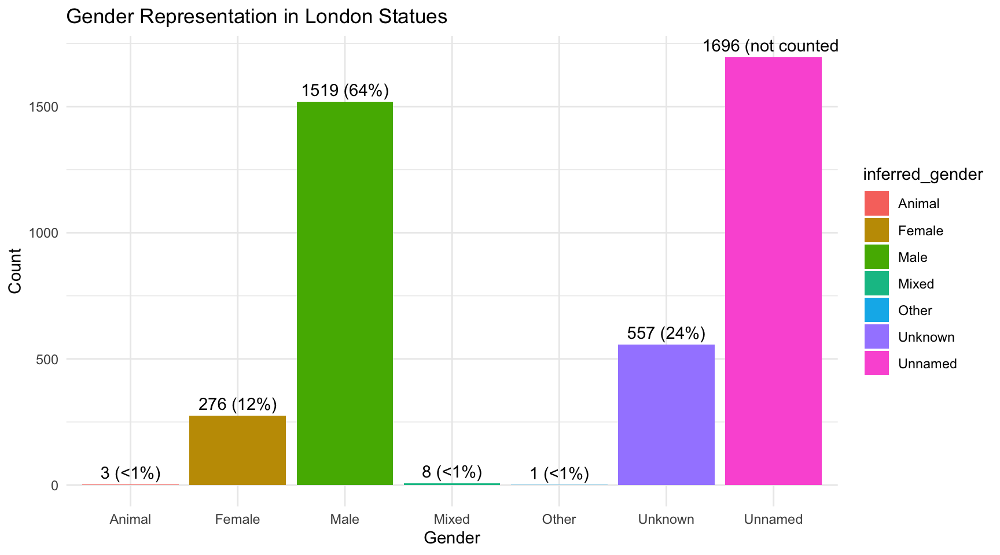
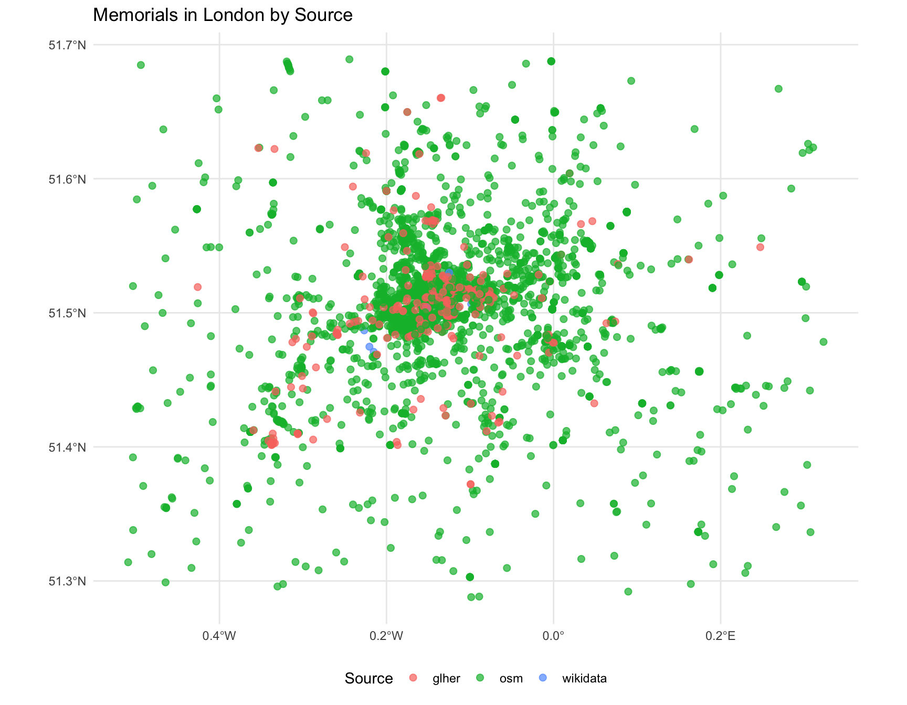

Are there more statues of men named John than of women in London? Of 2364 identifiable memorials: 102 Johns (4%) vs 284 statues of women (12%). The claim is refuted for London. 557 memorials (24%) have no gender that clears the confidence threshold.
| Category | Count | Percent |
|---|---|---|
| Unnamed | 1696 | not counted |
| Male | 1519 | 64% |
| Unknown | 557 | 24% |
| Female | 276 | 12% |
| Mixed | 8 | <1% |
| Animal | 3 | <1% |
| Other | 1 | <1% |
Caption: How are London’s memorials split by the gender of who they commemorate? One row per category, from memorials combined from Wikidata, OpenStreetMap and Historic England; records are merged only when they are close together and name the same subject. “Mixed” statues show a woman together with a man; the headline counts them as statues of women (276 Female + 8 Mixed = 284). “Unknown” means no gender reached the confidence threshold (see Reference). “Unnamed” records (1696) have no name or subject at all, so they are listed but left out of every percentage; percentages are of the 2364 identifiable memorials.
summary_table
Defined in R/tar_plans/memorial_analysis_plan.R#L118:
gender_analysis$summary %>%
dplyr::select(Category = inferred_gender, Count = n, Percent = percent_label)
Caption: How large is the gap between statues of men and of women? Bar heights are counts of memorials per inferred gender, labelled with count and share. Statues of women, including mixed ones, are 12% of identifiable memorials; the Unnamed bar is shown but not counted in any share. The Unknown bar (24%) is the main uncertainty: if many of those are women, the gap narrows.
category_plot
Defined in R/tar_plans/memorial_analysis_plan.R#L131:
ggplot(gender_analysis$summary, aes(x = inferred_gender, y = n, fill = inferred_gender)) +
geom_col() +
geom_text(aes(label = sprintf("%d (%s)", n, percent_label)), vjust = -0.5) +
labs(
title = "Gender Representation in London Statues",
x = "Gender",
y = "Count"
) +
theme_minimal()| Name | Count | Percent |
|---|---|---|
| Mary | 14 | 5% |
| Elizabeth | 9 | 3% |
| Margaret | 7 | 3% |
| Marie | 7 | 3% |
| World | 5 | 2% |
Caption: Which first names recur among statues of women? Counts are memorials whose subject’s first name is the given name, among those classified Female; percentages are of all statues of women. The most common is Mary (14). The list comes from the name rules, so a word that is not a name can slip in.
| Name | Count | Percent |
|---|---|---|
| John | 98 | 6% |
| William | 79 | 5% |
| The | 70 | 5% |
| George | 64 | 4% |
| Charles | 53 | 3% |
Caption: Is John really the most common name among statues of men? Counts are memorials whose subject’s first name is the given name, among those classified Male; percentages are of all statues of men. John ranks number 1 (98). This count is of the name John only; the Overview headline also counts Jon and Jean. The list comes from the name rules, so a word that is not a name can slip in.
gender_analysis
Defined in R/tar_plans/memorial_analysis_plan.R#L97:
{
lookup_files
analyze_by_gender(all_memorials, person_lookup = wikidata_people,
threshold = classification_threshold)
}Caption: Where in London are the memorials, and which source records each one? 4060 of 4060 memorials have coordinates; clusters show counts and split as you zoom in. Click a marker for that memorial’s details.

Caption: Do the three sources cover the same parts of London? Each point is one memorial, coloured by the source whose record was kept after de-duplication. Counts by source: glher 296, osm 3747, wikidata 17.
memorial_interactive_map
Defined in R/tar_plans/memorial_analysis_plan.R#L165:
map_statues(all_memorials, cluster = TRUE)memorial_map_plot
Defined in R/tar_plans/memorial_analysis_plan.R#L146:
{
data_sf <- all_memorials %>%
dplyr::filter(!is.na(lat), !is.na(lon)) %>%
sf::st_as_sf(coords = c("lon", "lat"), crs = 4326)
# source_name, not source: after combining, `source` is NA for every
# row, so the map was one grey colour
ggplot() +
geom_sf(data = data_sf, aes(color = source_name), size = 2, alpha = 0.7) +
labs(title = "Memorials in London by Source", color = "Source") +
theme_minimal() +
theme(legend.position = "bottom")
}The campaign Statues for Equality claims that:
Our London data: Found 102 statues named John/Jon/Jean (4%) vs 284 women statues (12%, including 8 of a woman with a man). 557 statues (24%) have unknown gender. Shares are of 2364 identifiable statues; 1696 records with no name or subject are not counted.
Validation: the claim that there are “more statues of men named John than of women” is refuted by this London dataset.
Percentages are of the 2364 identifiable memorials; 1696 records with no name or subject are not counted. The campaign’s claim is UK-wide; this dataset covers London only.
The two counts can overlap. A statue of a John together with a woman, such as “Katherine Mansfield and John Middleton Murry”, counts once as a John statue and once as a statue of a woman.
johns_comparison
Defined in R/tar_plans/memorial_analysis_plan.R#L107:
{
lookup_files
compare_johns_vs_women(all_memorials, person_lookup = wikidata_people,
threshold = classification_threshold)
}Many records name the object, not the person: “Statue of Sir John Millais in North Forecourt of Tate Gallery”. We first read the subject from that text (here “Sir John Millais”).
If first names and titles cannot decide it, we ask Wikidata whether the subject is a person and, if so, their sex. An exact name match scores 1 and a partial match 0.7.
A gender is used only when its confidence is at least the classification threshold, currently 0.9. The same threshold applies to first-name predictions. It is set in one place, inst/extdata/params.csv; setting it to 1 keeps only certain answers, and the rest stay Unknown.
| source | status | rows | reason |
|---|---|---|---|
| wikidata | ok | 52 | NA |
| osm | ok | 3900 | NA |
| glher | ok | 302 | NA |
| wikidata_people | ok | 14 | NA |
Caption: Did every data source respond, and how many rows did each return? ok means the fetch succeeded; an unavailable source is recorded with its reason rather than counted as empty. wikidata_people is the person lookup used to decide gender for subjects the name rules cannot (see How Gender Is Decided).
R/tar_plans/.This dashboard compares memorials in London honouring three groups:
Every number on these pages is computed by the targets pipeline; the Code tab on each card shows the pipeline step that produced it.
R version 4.5.2 (2025-10-31)
Platform: aarch64-apple-darwin24.6.0
Running under: macOS Tahoe 26.6.2
Matrix products: default
BLAS: /nix/store/6mzxjk9lajhz47524h5p165prxjdmivx-blas-3/lib/libblas.dylib
LAPACK: /nix/store/6r1gd6cr5bcp8rj0rs750gdygpci74l1-openblas-0.3.30/lib/libopenblasp-r0.3.30.dylib; LAPACK version 3.12.0
locale:
[1] en_US.UTF-8/en_US.UTF-8/en_US.UTF-8/C/en_US.UTF-8/en_US.UTF-8
time zone: Europe/Dublin
tzcode source: internal
attached base packages:
[1] stats graphics grDevices utils datasets methods base
other attached packages:
[1] leaflet_2.2.3 targets_1.11.4 sf_1.0-22 ggplot2_4.0.1 dplyr_1.1.4
loaded via a namespace (and not attached):
[1] generics_0.1.4 class_7.3-23 KernSmooth_2.23-26 digest_0.6.39
[5] magrittr_2.0.4 evaluate_1.0.5 grid_4.5.2 RColorBrewer_1.1-3
[9] fastmap_1.2.0 rprojroot_2.1.1 jsonlite_2.0.0 processx_3.8.6
[13] e1071_1.7-16 backports_1.5.0 secretbase_1.0.5 DBI_1.2.3
[17] ps_1.9.1 purrr_1.2.0 crosstalk_1.2.2 scales_1.4.0
[21] codetools_0.2-20 cli_3.6.5 rlang_1.1.6 units_1.0-0
[25] bit64_4.6.0-1 withr_3.0.2 yaml_2.3.10 tools_4.5.2
[29] base64url_1.4 assertthat_0.2.1 vctrs_0.6.5 R6_2.6.1
[33] proxy_0.4-27 lifecycle_1.0.4 classInt_0.4-11 bit_4.6.0
[37] htmlwidgets_1.6.4 arrow_20.0.0 pkgconfig_2.0.3 callr_3.7.6
[41] pillar_1.11.1 gtable_0.3.6 glue_1.8.0 data.table_1.17.8
[45] Rcpp_1.1.0 xfun_0.54 tibble_3.3.0 tidyselect_1.2.1
[49] knitr_1.50 farver_2.1.2 htmltools_0.5.8.1 igraph_2.2.1
[53] labeling_0.4.3 rmarkdown_2.30 compiler_4.5.2 prettyunits_1.2.0
[57] S7_0.2.1